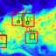

**Christopher Beckham**
PhD student, Quebec Artficial Intelligence Institute.
Research interests: unsupervised learning, representation learning, inverse graphics
Contact: christopher.beckham(at)mila(dot)quebec
Selected papers
===============================================================================
Below is a selection of papers I have published. For a full list, please see my Google Scholar.
Conferences
-------------------------------------------------------------------------------
**Beckham, C.**, Honari, S., Verma, V., Lamb, A. M., Ghadiri, F., Hjelm, R. D., Bengio, Y., & Pal, C. (2019). _On adversarial mixup resynthesis._ In Advances in Neural Information Processing Systems (pp. 4346-4357).
tldr: We leverage mixing functions and adversarial learning to perform representation learning in the bottleneck of a deterministic autoencoder. This can be leveraged as a generative model to produce novel examples (through mixing latent codes of known examples) and also avoid some of the shortcomings commonly observed in variational autoencoder (VAE) models.
Verma, V., Lamb, A., **Beckham, C.**, Najafi, A., Mitliagkas, I., Lopez-Paz, D., & Bengio, Y. (2019, May). _Manifold mixup: Better representations by interpolating hidden states._ In International Conference on Machine Learning (pp. 6438-6447).
tldr: Perform mixup (Zhang et al, 2017) but in the hidden layers of a classifier, mixing pairs of hidden states. This can be seen as performing implicit data augmentation by leveraging features internally learned by the classifier. Competitive accuracies are achieved with respect to the original mixup and other baselines.
Moniz, J. R. A. †, Beckham, C. †, Rajotte, S., Honari, S., & Pal, C. (2018). _Unsupervised depth estimation, 3D face rotation and replacement._ In Advances in Neural Information Processing Systems (pp. 9736-9746). († = equal authorship)
tldr: We perform unsupervised depth estimation by conditioning on source and target keypoints of an object to predict depth, which is subsequently used to parameterise an affine transformation from a source to a target. The inferred depths are well correlated with the ground truth depths and can be used (in our case) to perform various transformations of a face mesh.
 Racah, E., **Beckham, C.**, Maharaj, T., Kahou, S. E., Prabhat, M., & Pal, C. (2017). _ExtremeWeather: A large-scale climate dataset for semi-supervised detection, localization, and understanding of extreme weather events._ In Advances in Neural Information Processing Systems (pp. 3402-3413). [[paper]](todo) [[code]](todo) [[retrospective]](todo)
tldr: We propose a high-resolution time series dataset of climate simulations with ground truth labels to perform classification and bounding box prediction. We hope this will be useful in the battle against climate change.
**Beckham, C.**, & Pal, C. (2017, July). _Unimodal probability distributions for deep ordinal classification._ In International Conference on Machine Learning (pp. 411-419). [[paper]](todo) [[code]](todo) [[retrospective]](todo).
tldr: Unimodal distributions are a natural way to fit probability distributions for many ordinal classification tasks. We use deep nets to parameterise binomial and Poisson distributions with optional temperature scaling to control distribution variance.
Workshops
-------------------------------------------------------------------------------
**Beckham, C.**, & Pal, C. (2016). _A simple squared-error reformulation for ordinal classification._ arXiv preprint arXiv:1612.00775. _(Accepted into NIPS 2016: Machine Learning for Health)_
tldr: Treat ordinal classification as a regression problem, but still maintain a discrete probability distribution over classes by computing the regression as the expectation of integer labels over that distribution.